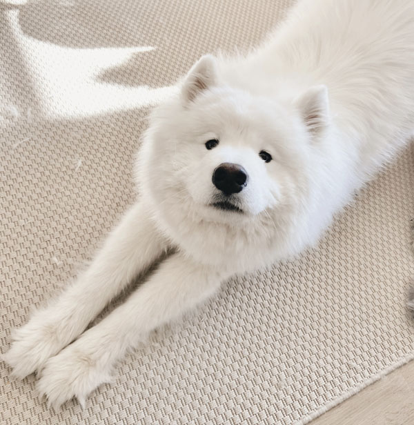

Life of a Samoyed

"Samoyeds are another of the truly easy-to-keep breeds, thriving on fairly small amounts of top quality food. Too many treats or not enough exercise can easily lead to obesity. Samoyeds tend to be hardy, long-lived dogs, often reaching 12 or 14 years of age.
These are active dogs and need daily exercise. Since Samoyeds are so attuned to people, they enjoy training and will happily compete in obedience, agility, herding, sledding, and weight pulls. They do not do well if left alone for long periods of time. Samoyeds usually alarm bark but then greet the stranger with a wagging tail and tongue. The characteristic "Sammie smile" with the curved lips is not in any way an expression of aggression.
Samoyeds can be a bit independent and do best with early training and socialization with a firm but gentle hand. They are happiest when given chores to do, even if just pulling a cart in a parade. Grooming must be done daily or nearly so, especially during shedding time." hillspet.com